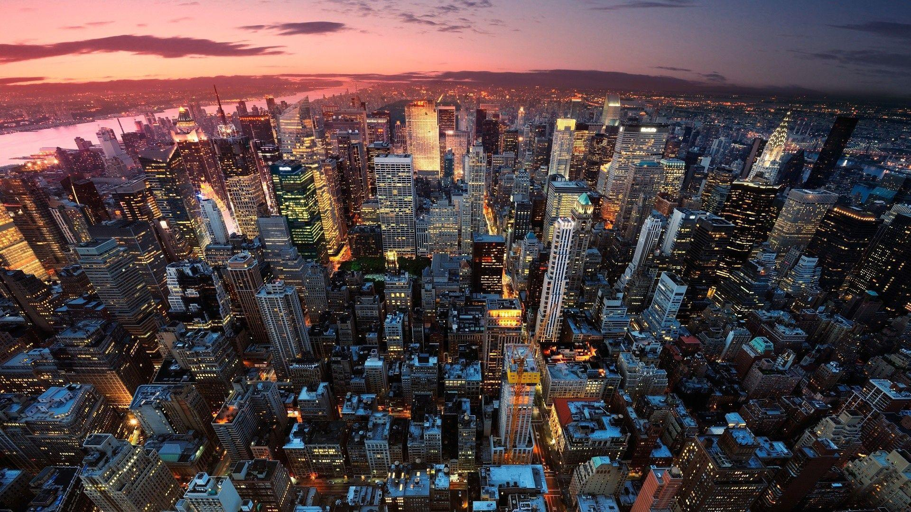
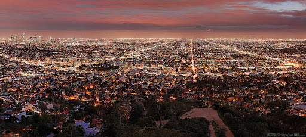

Los Angeles

„ Културните и кулинарни лидери на Лос Анджелис - толкова склонни да се активизират и да обявят града отворен за бизнес след поредица от природни бедствия, като помагат на града да се класира на второ място. 7 в нашата категория Промоция - скоро ще бъде призована отново “

Лос Анджелис посрещна над 50 милиона посетители през 2019 г., пристигайки от цял свят за плажовете на града, филмовите студия, музеите и потенциала за забелязване на звезди

Но Лос Анджелис също е претърпял кулинарен ренесанс, толкова много, че е домакин на две отделни седмици в ресторанта, за да демонстрира опциите, предлага изобилие от барове на покрива от центъра до Западен Холивуд